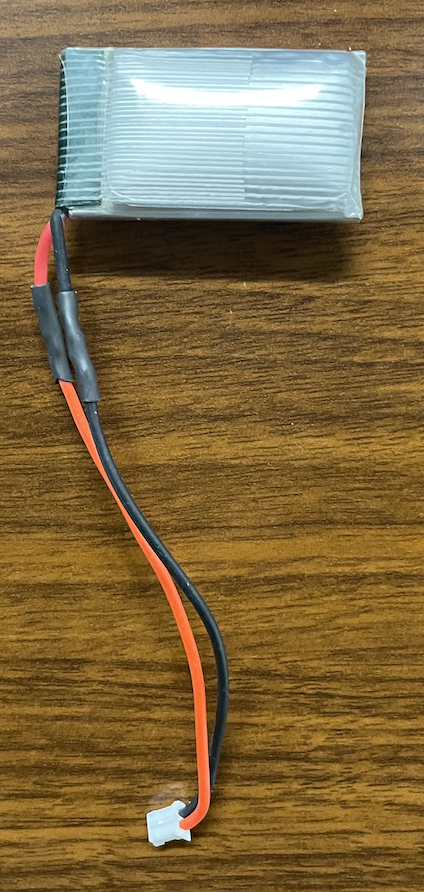
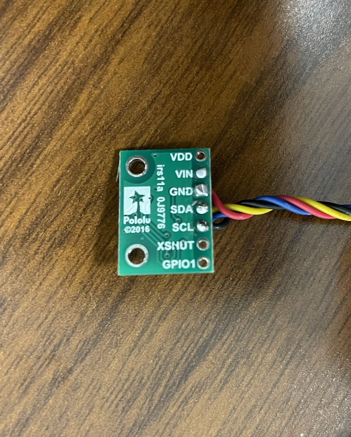
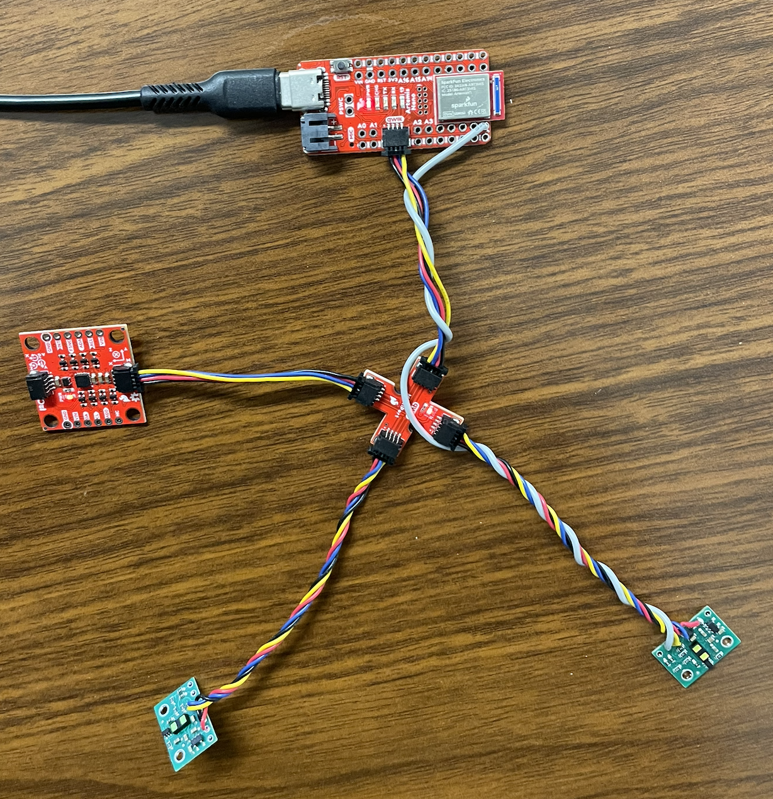
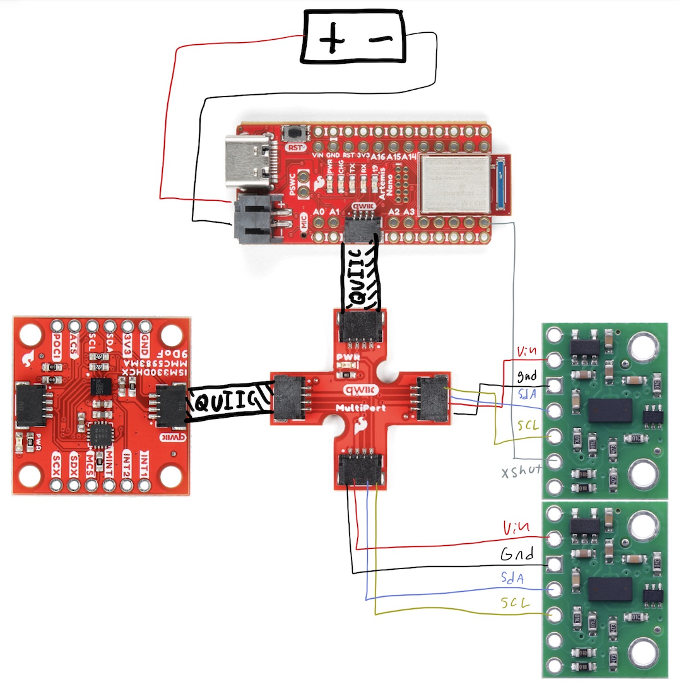
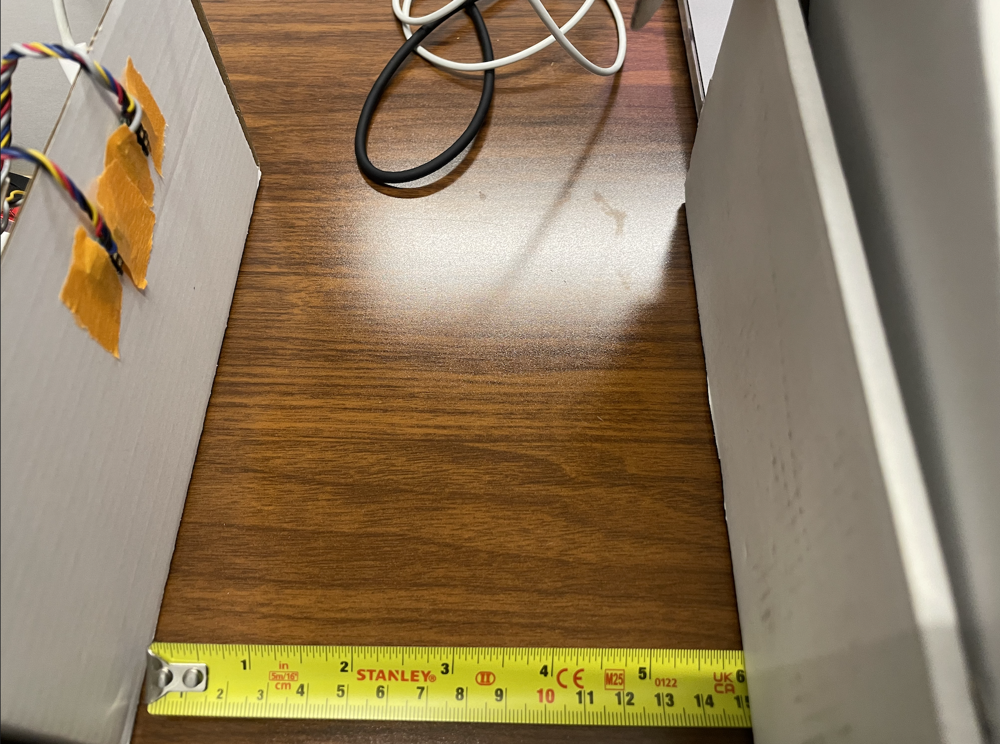
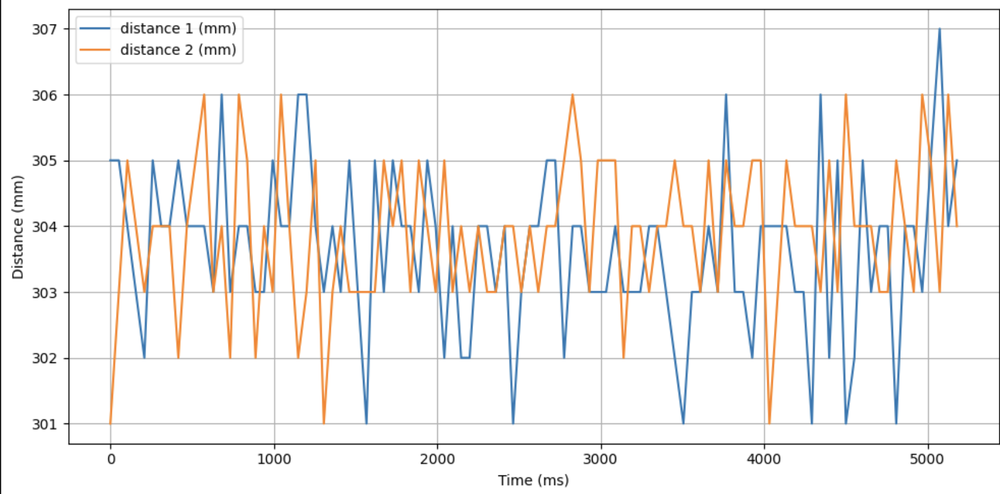
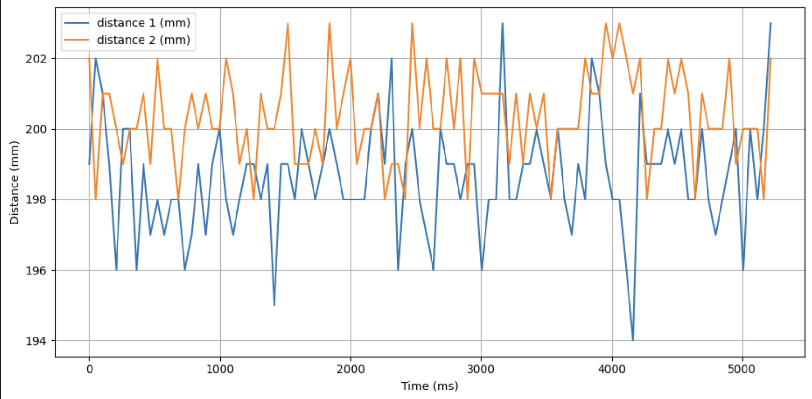
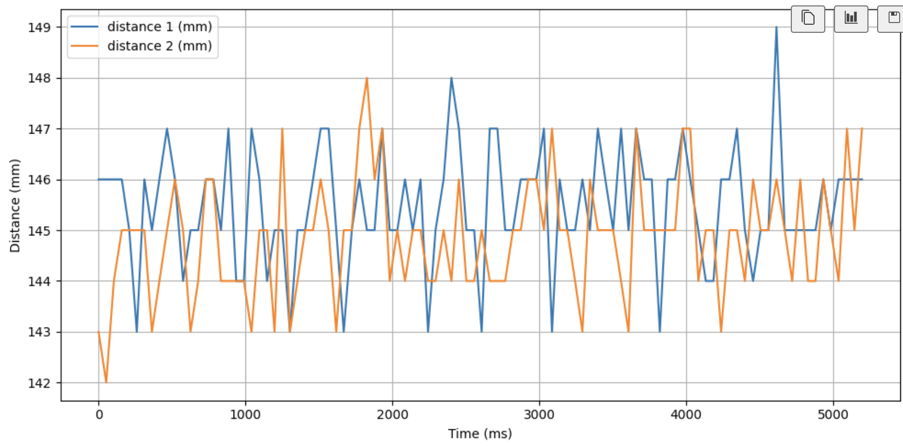
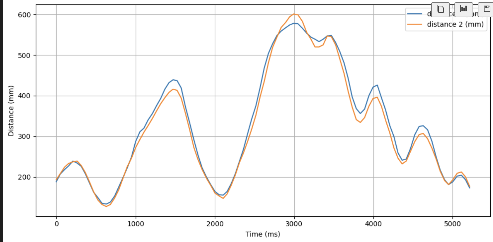

Lab 3: Time-of-Flight Distance Sensing
Overview
This lab integrates two VL53L1X time-of-flight distance sensors with the Artemis over I²C using QWIIC. The work focuses on reliable wiring, confirming I²C communication, resolving address conflicts for dual-sensor use, and evaluating measurement stability across static and dynamic tests.
1. Lab Tasks
1.1 Power and wiring
After confirming the wiring color scheme, the battery leads were soldered to a connector compatible with the Artemis board to provide a secure and reliable power interface. Care was taken to ensure proper polarity and mechanical strain relief to prevent accidental disconnection during operation.

1.2 QWIIC leads on the ToF boards
The supplied QWIIC cables were cut and soldered directly to the ToF sensor boards. These connections allow the sensors to plug into a QWIIC splitter, enabling multiple devices to share a single I²C port on the Artemis while maintaining a compact and organized wiring layout.

1.3 Confirm I²C communication
With the Artemis connected to a single ToF sensor, the Example05_wire_I2C scanner was executed. The scan detected a device at address 0x29, confirming that the sensor was powered, communicating properly, and using its factory default 7-bit I²C address.
Scanning… (port: 0x10000E9C), time (ms): 1855650
0x29 detected1.4 Dual-sensor addressing with XSHUT
Because both ToF sensors share the same default address, they cannot operate simultaneously on the same bus without modification. To resolve this, a wire was soldered from Artemis pin 8 to the XSHUT pin of one sensor. This hardware shutdown line allows that sensor to be temporarily disabled during initialization, enabling the active sensor’s address to be reassigned before bringing the second device online. Once configured, both sensors can operate concurrently and be addressed independently.


2. Distance Modes
Time-of-flight sensors support short, medium, and long distance modes that trade range for speed and measurement stability. Long mode was selected because it provides sufficient accuracy at short distances while enabling detection of distant obstacles relevant for navigation.
3. Integration Notes
Unfortunately, I could not get my IMU to work alongside my ToF sensors before the deadline.
4. Sensor Characterization
4.1 Static and dynamic measurements
Measurements were collected at three fixed distances and during continuous motion. The sensors exhibited a maximum variation of approximately 0.5 cm, indicating very low noise and stable real-time tracking.





5. Infrared Distance Sensor Types
Infrared distance sensing can be implemented using optical triangulation sensors or time-of-flight modules. Triangulation sensors estimate distance from the angle of a reflected spot and typically output an analog signal. Time-of-flight sensors measure the travel time of light pulses, providing a direct digital distance measurement with longer range and greater repeatability, making them well suited for robotics applications.